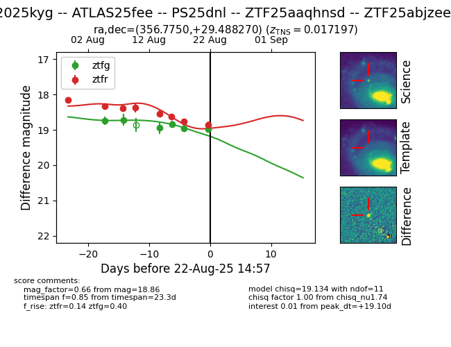

Target 2025kyg at 2025-08-22 14:57, see:
FINK: fink-portal.org/ZTF25aaqhnsd
Lasair: lasair-ztf.lsst.ac.uk/objects/ZTF25aaqhnsd
ALeRCE: alerce.online/object/ZTF25aaqhnsd
TNS: wis-tns.org/object/2025kyg
YSE: ziggy.ucolick.org/yse/transient_detail/2025kyg
alt names
ZTF25aaqhnsd (ztf)
ZTF25abjzeef (alerce)
2025kyg (tns,yse)
ATLAS25fee (atlas)
PS25dnl (panstarrs)
coordinates:
equatorial (ra, dec) = (356.7750,+29.48827)
galactic (l, b) = (106.5331,-31.32647)
photometry
last ztfg=18.97, ztfr=18.86
6 ztfg, 8 ztfr detections
